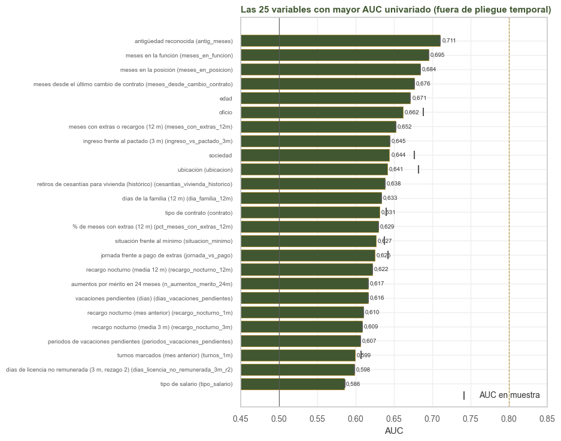

6. Auditoría de fuga#
Alcance
Las secciones 6.1 a 6.6 se calculan con el entrenamiento (enero de 2025 a abril de 2026). La sección 6.7 remite al capítulo 2 para la comparación entre entrenamiento y test. Las revisiones hechas al construir el panel sobre las tablas de origen se citan como tales: sus cifras no se pueden recalcular desde el panel, porque las columnas con fuga no están en él.
Una variable tiene fuga cuando contiene información que no estaría disponible en el momento de predecir, casi siempre porque se registra a causa del desenlace. La predicción de este proyecto se hace el día 1 del mes t (o el primer día activo, si la persona ingresa a mitad de mes) y se refiere a la renuncia durante el mes t. Cualquier dato que se conozca después de esa fecha es sospechoso. El capítulo revisa las 105 predictoras en cinco frentes: cuándo se conoce cada una, qué columnas derivan del desenlace, qué fugas se corrigieron al construir el panel, cuánto predice cada variable sola y si su señal se concentra justo antes de la salida.
import sys
import warnings
from pathlib import Path
import numpy as np
import pandas as pd
import matplotlib.pyplot as plt
from sklearn.metrics import roc_auc_score
sys.path.insert(0, '.')
warnings.filterwarnings('ignore')
from comun import (cargar, particion, estilo, etiquetar, pliegues_temporales, OBJETIVO, NUM, BIN, CAT, FUERA,
PREDICTORAS, BLOQUE, BLOQUES, NOMBRE, SENSIBILIDAD, DESENLACE,
VERDE, ORO, GRIS, BORDE)
estilo()
pd.set_option('display.max_rows', 200)
p = cargar()
tr, te = particion(p)
y = tr[OBJETIVO].to_numpy()
print(f'entrenamiento: {len(tr):,} filas | {int(y.sum())} renuncias | predictoras: {len(PREDICTORAS)} '
f'({len(NUM)} numéricas, {len(BIN)} binarias de atributos, {len(CAT)} categóricas)')
print('fuera de la historia por el capítulo 1:', FUERA)
print('columnas del panel que no son predictoras:',
[c for c in p.columns if c not in PREDICTORAS])
entrenamiento: 67,416 filas | 688 renuncias | predictoras: 105 (85 numéricas, 3 binarias de atributos, 17 categóricas)
fuera de la historia por el capítulo 1: ['contrato_fijo', 'horas_bajo_legal', 'cambios_plan_12m', 'horas_diarias_teoricas', 'plan_horario']
columnas del panel que no son predictoras: ['persona_id', 'mes', 'contrato_fijo', 'plan_horario', 'horas_diarias_teoricas', 'horas_bajo_legal', 'cambios_plan_12m', 'preaviso_no_renovacion', 'evento', 'y_renuncia']
6.1. Disponibilidad en el momento de la predicción#
La tabla siguiente dice, para cada una de las 105 predictoras, de qué ventana sale (columna
disponible del diccionario del capítulo 1) y si se conoce el día 1 del mes t. La ventana se
verificó en los programas que construyen cada bloque del panel. Hay tres reglas generales:
Foto del día 1. Los atributos, el contrato, la trayectoria, el salario relativo, el horario teórico y el saldo de vacaciones se leen del registro vigente el día 1 (o el primer día activo). Un cambio que empieza ese mismo día ya se conoce; uno que empieza el día 15 no cuenta hasta t+1.
Rezago de un mes en nómina y marcaciones. La nómina del mes m se liquida al cierre de m y el mes en curso es el de la salida: por eso las horas extra, recargos, bonos, ingreso y marcaciones biométricas de la fila t terminan en t−1 (ventanas de 1, 3 y 12 meses). La fecha de las últimas vacaciones pagadas va con dos meses de rezago, porque se suelen tomar justo antes de salir.
Ausencias. Los registros de novedades (licencias, capacitación, compensatorios, día de la familia; nada de salud) se reparten por días entre los meses que cubren y van con rezago de un mes. Los días de licencia no remunerada van con dos meses de rezago (sufijo
_r2); la razón se ve en la sección 6.2.
dic = pd.read_csv('diccionario.csv').set_index('variable')
# fuente de cada ventana (verificada en los programas de construcción de cada bloque)
FUENTE = {
'día 1 del mes t': 'registro vigente el día 1 (o primer día activo)',
'mes t-1 (cargo del mes anterior)': 'cargo del mes anterior: en el mes de salida el cargo queda vacío',
'antes del día 1 del mes t': 'eventos con fecha anterior al día 1',
'perfil del trabajador (fijo)': 'lugar de nacimiento del perfil; no cambia en el tiempo',
'cierre de nómina del mes t-1': 'nómina liquidada, rezago de un mes',
'cierres de nómina de t-3 a t-1': 'nómina liquidada, rezago de un mes',
'cierres de nómina de t-12 a t-1': 'nómina liquidada, rezago de un mes',
'marcaciones del mes t-1': 'marcaciones biométricas, rezago de un mes',
'marcaciones de t-3 a t-1': 'marcaciones biométricas, rezago de un mes',
'marcaciones de t-3 a t-1 y nómina': 'marcaciones y nómina, rezago de un mes',
'registro de novedades de t-12 a t-1': 'novedades de ausencia, rezago de un mes',
'registro de novedades de t-4 a t-2': 'novedades de ausencia, rezago de dos meses',
'registro de novedades de t-13 a t-2': 'novedades de ausencia, rezago de dos meses',
'nómina hasta t-2 (rezago de dos meses)': 'vacaciones pagadas, rezago de dos meses',
}
# las que se conocen el día 1 pero con una reserva documentada
RESERVA = {
**{v: 'rezago de dos meses: el mes t-2 puede completarse después del día 1 (6,2 % de las licencias no remuneradas)'
for v in ['dias_licencia_no_remunerada_3m_r2', 'dias_licencia_no_remunerada_12m_r2']},
**{v: 'rezago de un mes: el mes t-1 puede completarse ya entrado t (registro tardío de novedades)'
for v in ['licencias_no_remuneradas_12m', 'dias_licencia_remunerada_12m', 'dias_capacitacion_12m',
'dias_compensatorio_12m', 'dia_familia_12m']},
**{v: 'saldo reconstruido; la compensación en dinero se fecha con la última modificación del registro'
for v in ['dias_vacaciones_pendientes', 'periodos_vacaciones_pendientes', 'vacaciones_acumuladas_2p',
'dias_vacaciones_compensadas_12m']},
'nacido_en_depto_sede': 'el departamento de la sede se estima con los perfiles actuales',
}
disp = pd.DataFrame({
'bloque': [BLOQUE[v] for v in PREDICTORAS],
'variable': PREDICTORAS,
'ventana': [dic.disponible.get(v, '(sin diccionario)') for v in PREDICTORAS],
})
disp['fuente'] = disp.ventana.map(FUENTE).fillna('(revisar)')
disp['¿se conoce el día 1 de t?'] = np.where(disp.variable.isin(RESERVA), 'sí, con reserva', 'sí')
disp['reserva'] = disp.variable.map(RESERVA).fillna('')
print('variables sin fuente asignada:', int(disp.fuente.eq('(revisar)').sum()))
resumen = pd.crosstab(disp.bloque, disp['¿se conoce el día 1 de t?'], margins=True, margins_name='total')
resumen
variables sin fuente asignada: 0
| bloque / ¿se conoce el día 1 de t? | sí | sí, con reserva | total |
|---|---|---|---|
| atributos | 18 | 0 | 18 |
| ausencias | 0 | 7 | 7 |
| contrato | 6 | 0 | 6 |
| ingreso_relativo | 13 | 0 | 13 |
| jornada | 27 | 0 | 27 |
| origen | 0 | 1 | 1 |
| proyectos_personales | 3 | 0 | 3 |
| salario_relativo | 14 | 0 | 14 |
| trayectoria | 11 | 0 | 11 |
| vacaciones | 1 | 4 | 5 |
| total | 93 | 12 | 105 |
Nótese que las 105 predictoras se conocen el día 1 del mes que se predice: ninguna usa un dato del mes t posterior a esa fecha. Noventa y tres lo hacen sin reserva. Doce llevan una reserva documentada, que no las saca del modelo pero sí las deja en observación (sección 6.8):
Las siete ausencias. La validación de la fuente mide, para cada registro de novedad, si su último cambio cae en el mismo mes en que empieza la ausencia, a más tardar el mes siguiente, o después:
clase |
mismo mes |
a más tardar el mes siguiente |
después |
|---|---|---|---|
licencia no remunerada |
64,7 % |
93,8 % |
6,2 % |
licencia remunerada |
68,9 % |
92,7 % |
7,3 % |
capacitación |
62,6 % |
100,0 % |
0,0 % |
compensatorio |
72,7 % |
99,9 % |
0,1 % |
día de la familia |
90,0 % |
99,9 % |
0,1 % |
Con rezago de un mes, el mes t−1 de la ventana solo tiene el día 1 de t lo registrado dentro del mismo mes (entre el 63 % y el 90 %). Con rezago de dos, el mes t−2 tiene lo registrado a más tardar el mes siguiente: el 93,8 % de las licencias no remuneradas, y queda un 6,2 % que llega después. Es una cota superior (el último cambio puede ser la corrección de un registro que ya existía) y en las ventanas de 12 meses afecta a uno de los doce meses. Por eso las licencias no remuneradas van con dos meses de rezago y las demás ausencias quedan con reserva.
Las otras cinco con reserva:
Cuatro de vacaciones. El saldo del día 1 se reconstruye con la historia de días causados y vacaciones disfrutadas; la compensación en dinero se fecha con la última modificación del registro de días causados, porque la fuente no guarda la fecha de cada liquidación. Si esa modificación ocurre al salir, el saldo de los meses previos queda algo alto. El cotejo del último mes contra el saldo actual coincide (±1 día) en el 93 % de las personas.
nacido_en_depto_sede. El lugar de nacimiento no cambia, pero el departamento de la sede se estima con los perfiles actuales de quienes trabajan en ella.
La tabla completa, variable por variable, está plegada a continuación.
disp.set_index(['bloque', 'variable'])
Show code cell output
| bloque / variable | ventana | fuente | ¿se conoce el día 1 de t? | reserva | |
|---|---|---|---|---|---|
| atributos | edad | día 1 del mes t | registro vigente el día 1 (o primer día activo) | sí | |
| antig_meses | día 1 del mes t | registro vigente el día 1 (o primer día activo) | sí | ||
| primer_mes | día 1 del mes t | registro vigente el día 1 (o primer día activo) | sí | ||
| reingreso | día 1 del mes t | registro vigente el día 1 (o primer día activo) | sí | ||
| traslado_12m | día 1 del mes t | registro vigente el día 1 (o primer día activo) | sí | ||
| sociedad | día 1 del mes t | registro vigente el día 1 (o primer día activo) | sí | ||
| linea | día 1 del mes t | registro vigente el día 1 (o primer día activo) | sí | ||
| ubicacion | día 1 del mes t | registro vigente el día 1 (o primer día activo) | sí | ||
| genero | día 1 del mes t | registro vigente el día 1 (o primer día activo) | sí | ||
| estado_civil | día 1 del mes t | registro vigente el día 1 (o primer día activo) | sí | ||
| contrato | día 1 del mes t | registro vigente el día 1 (o primer día activo) | sí | ||
| nivel | día 1 del mes t | registro vigente el día 1 (o primer día activo) | sí | ||
| familia_cargo | mes t-1 (cargo del mes anterior) | cargo del mes anterior: en el mes de salida el... | sí | ||
| oficio | mes t-1 (cargo del mes anterior) | cargo del mes anterior: en el mes de salida el... | sí | ||
| tipo_unidad | día 1 del mes t | registro vigente el día 1 (o primer día activo) | sí | ||
| area_funcional | día 1 del mes t | registro vigente el día 1 (o primer día activo) | sí | ||
| proceso_planta | día 1 del mes t | registro vigente el día 1 (o primer día activo) | sí | ||
| tipo_costos | día 1 del mes t | registro vigente el día 1 (o primer día activo) | sí | ||
| contrato | meses_al_vencimiento | día 1 del mes t | registro vigente el día 1 (o primer día activo) | sí | |
| n_renovaciones | día 1 del mes t | registro vigente el día 1 (o primer día activo) | sí | ||
| meses_desde_cambio_contrato | día 1 del mes t | registro vigente el día 1 (o primer día activo) | sí | ||
| fue_aprendiz | día 1 del mes t | registro vigente el día 1 (o primer día activo) | sí | ||
| meses_desde_aprendiz | día 1 del mes t | registro vigente el día 1 (o primer día activo) | sí | ||
| ingreso_a_mitad | día 1 del mes t | registro vigente el día 1 (o primer día activo) | sí | ||
| trayectoria | meses_en_posicion | día 1 del mes t | registro vigente el día 1 (o primer día activo) | sí | |
| meses_en_funcion | día 1 del mes t | registro vigente el día 1 (o primer día activo) | sí | ||
| meses_desde_ascenso | día 1 del mes t | registro vigente el día 1 (o primer día activo) | sí | ||
| n_ascensos_24m | día 1 del mes t | registro vigente el día 1 (o primer día activo) | sí | ||
| n_movimientos_laterales_12m | día 1 del mes t | registro vigente el día 1 (o primer día activo) | sí | ||
| es_jefe_formal | día 1 del mes t | registro vigente el día 1 (o primer día activo) | sí | ||
| personas_a_cargo | día 1 del mes t | registro vigente el día 1 (o primer día activo) | sí | ||
| tamano_equipo_jefe | día 1 del mes t | registro vigente el día 1 (o primer día activo) | sí | ||
| salario_relativo | tipo_salario | día 1 del mes t | registro vigente el día 1 (o primer día activo) | sí | |
| posicionamiento | día 1 del mes t | registro vigente el día 1 (o primer día activo) | sí | ||
| posicionamiento_local | día 1 del mes t | registro vigente el día 1 (o primer día activo) | sí | ||
| gini_oficio_nivel | día 1 del mes t | registro vigente el día 1 (o primer día activo) | sí | ||
| privacion_oficio_nivel | día 1 del mes t | registro vigente el día 1 (o primer día activo) | sí | ||
| residuo_sueldo | día 1 del mes t | registro vigente el día 1 (o primer día activo) | sí | ||
| en_mediana_local | día 1 del mes t | registro vigente el día 1 (o primer día activo) | sí | ||
| dist_mediana_local | día 1 del mes t | registro vigente el día 1 (o primer día activo) | sí | ||
| gana_minimo | día 1 del mes t | registro vigente el día 1 (o primer día activo) | sí | ||
| var_sueldo_smmlv_12m | día 1 del mes t | registro vigente el día 1 (o primer día activo) | sí | ||
| situacion_minimo | día 1 del mes t | registro vigente el día 1 (o primer día activo) | sí | ||
| meses_desde_aumento_merito | día 1 del mes t | registro vigente el día 1 (o primer día activo) | sí | ||
| pct_ultimo_aumento_merito | día 1 del mes t | registro vigente el día 1 (o primer día activo) | sí | ||
| n_aumentos_merito_24m | día 1 del mes t | registro vigente el día 1 (o primer día activo) | sí | ||
| jornada | estado_gestion_tiempos | día 1 del mes t | registro vigente el día 1 (o primer día activo) | sí | |
| horas_extra_1m | cierre de nómina del mes t-1 | nómina liquidada, rezago de un mes | sí | ||
| recargo_nocturno_1m | cierre de nómina del mes t-1 | nómina liquidada, rezago de un mes | sí | ||
| dominicales_1m | cierre de nómina del mes t-1 | nómina liquidada, rezago de un mes | sí | ||
| sabados_smmlv_1m | cierre de nómina del mes t-1 | nómina liquidada, rezago de un mes | sí | ||
| horas_extra_3m | cierres de nómina de t-3 a t-1 | nómina liquidada, rezago de un mes | sí | ||
| recargo_nocturno_3m | cierres de nómina de t-3 a t-1 | nómina liquidada, rezago de un mes | sí | ||
| dominicales_3m | cierres de nómina de t-3 a t-1 | nómina liquidada, rezago de un mes | sí | ||
| sabados_smmlv_3m | cierres de nómina de t-3 a t-1 | nómina liquidada, rezago de un mes | sí | ||
| horas_extra_12m | cierres de nómina de t-12 a t-1 | nómina liquidada, rezago de un mes | sí | ||
| recargo_nocturno_12m | cierres de nómina de t-12 a t-1 | nómina liquidada, rezago de un mes | sí | ||
| dominicales_12m | cierres de nómina de t-12 a t-1 | nómina liquidada, rezago de un mes | sí | ||
| sabados_smmlv_12m | cierres de nómina de t-12 a t-1 | nómina liquidada, rezago de un mes | sí | ||
| meses_con_extras_12m | cierres de nómina de t-12 a t-1 | nómina liquidada, rezago de un mes | sí | ||
| pct_meses_con_extras_12m | cierres de nómina de t-12 a t-1 | nómina liquidada, rezago de un mes | sí | ||
| elegible_horas_extra | cierres de nómina de t-12 a t-1 | nómina liquidada, rezago de un mes | sí | ||
| turnos_1m | marcaciones del mes t-1 | marcaciones biométricas, rezago de un mes | sí | ||
| horas_turno_1m | marcaciones del mes t-1 | marcaciones biométricas, rezago de un mes | sí | ||
| horas_turno_3m | marcaciones de t-3 a t-1 | marcaciones biométricas, rezago de un mes | sí | ||
| pct_turnos_10h_3m | marcaciones de t-3 a t-1 | marcaciones biométricas, rezago de un mes | sí | ||
| pct_turnos_12h_3m | marcaciones de t-3 a t-1 | marcaciones biométricas, rezago de un mes | sí | ||
| pct_turnos_nocturnos_3m | marcaciones de t-3 a t-1 | marcaciones biométricas, rezago de un mes | sí | ||
| domingos_3m | marcaciones de t-3 a t-1 | marcaciones biométricas, rezago de un mes | sí | ||
| pct_entradas_sin_salida_3m | marcaciones de t-3 a t-1 | marcaciones biométricas, rezago de un mes | sí | ||
| marca_biometrico | marcaciones del mes t-1 | marcaciones biométricas, rezago de un mes | sí | ||
| jornada_vs_pago | marcaciones de t-3 a t-1 y nómina | marcaciones y nómina, rezago de un mes | sí | ||
| turnos_largos_sin_pago | marcaciones de t-3 a t-1 y nómina | marcaciones y nómina, rezago de un mes | sí | ||
| ingreso_relativo | ingreso_vs_pactado_3m | cierres de nómina de t-3 a t-1 | nómina liquidada, rezago de un mes | sí | |
| pct_variable_3m | cierres de nómina de t-3 a t-1 | nómina liquidada, rezago de un mes | sí | ||
| volatilidad_ingreso_12m | cierres de nómina de t-12 a t-1 | nómina liquidada, rezago de un mes | sí | ||
| cambio_ingreso_3m_vs_9m | cierres de nómina de t-12 a t-1 | nómina liquidada, rezago de un mes | sí | ||
| meses_con_ausencia_pagada_12m | cierres de nómina de t-12 a t-1 | nómina liquidada, rezago de un mes | sí | ||
| bono_fiesta_12m | cierres de nómina de t-12 a t-1 | nómina liquidada, rezago de un mes | sí | ||
| bono_seleccionado_12m | cierres de nómina de t-12 a t-1 | nómina liquidada, rezago de un mes | sí | ||
| bonif_ocasional_12m | cierres de nómina de t-12 a t-1 | nómina liquidada, rezago de un mes | sí | ||
| meses_con_bpr_12m | cierres de nómina de t-12 a t-1 | nómina liquidada, rezago de un mes | sí | ||
| bono_productividad_12m | cierres de nómina de t-12 a t-1 | nómina liquidada, rezago de un mes | sí | ||
| bonificacion_otra_12m | cierres de nómina de t-12 a t-1 | nómina liquidada, rezago de un mes | sí | ||
| auxilio_educativo_12m | cierres de nómina de t-12 a t-1 | nómina liquidada, rezago de un mes | sí | ||
| auxilios_3m | cierres de nómina de t-3 a t-1 | nómina liquidada, rezago de un mes | sí | ||
| ausencias | dias_licencia_no_remunerada_3m_r2 | registro de novedades de t-4 a t-2 | novedades de ausencia, rezago de dos meses | sí, con reserva | rezago de dos meses: el mes t-2 puede completa... |
| dias_licencia_no_remunerada_12m_r2 | registro de novedades de t-13 a t-2 | novedades de ausencia, rezago de dos meses | sí, con reserva | rezago de dos meses: el mes t-2 puede completa... | |
| licencias_no_remuneradas_12m | registro de novedades de t-12 a t-1 | novedades de ausencia, rezago de un mes | sí, con reserva | rezago de un mes: el mes t-1 puede completarse... | |
| dias_licencia_remunerada_12m | registro de novedades de t-12 a t-1 | novedades de ausencia, rezago de un mes | sí, con reserva | rezago de un mes: el mes t-1 puede completarse... | |
| dias_capacitacion_12m | registro de novedades de t-12 a t-1 | novedades de ausencia, rezago de un mes | sí, con reserva | rezago de un mes: el mes t-1 puede completarse... | |
| dias_compensatorio_12m | registro de novedades de t-12 a t-1 | novedades de ausencia, rezago de un mes | sí, con reserva | rezago de un mes: el mes t-1 puede completarse... | |
| dia_familia_12m | registro de novedades de t-12 a t-1 | novedades de ausencia, rezago de un mes | sí, con reserva | rezago de un mes: el mes t-1 puede completarse... | |
| vacaciones | meses_desde_vacaciones | nómina hasta t-2 (rezago de dos meses) | vacaciones pagadas, rezago de dos meses | sí | |
| dias_vacaciones_pendientes | día 1 del mes t | registro vigente el día 1 (o primer día activo) | sí, con reserva | saldo reconstruido; la compensación en dinero ... | |
| periodos_vacaciones_pendientes | día 1 del mes t | registro vigente el día 1 (o primer día activo) | sí, con reserva | saldo reconstruido; la compensación en dinero ... | |
| vacaciones_acumuladas_2p | día 1 del mes t | registro vigente el día 1 (o primer día activo) | sí, con reserva | saldo reconstruido; la compensación en dinero ... | |
| dias_vacaciones_compensadas_12m | día 1 del mes t | registro vigente el día 1 (o primer día activo) | sí, con reserva | saldo reconstruido; la compensación en dinero ... | |
| origen | nacido_en_depto_sede | perfil del trabajador (fijo) | lugar de nacimiento del perfil; no cambia en e... | sí, con reserva | el departamento de la sede se estima con los p... |
| trayectoria | postulaciones_internas_12m | antes del día 1 del mes t | eventos con fecha anterior al día 1 | sí | |
| requisicion_promocion_12m | antes del día 1 del mes t | eventos con fecha anterior al día 1 | sí | ||
| meses_desde_postulacion | antes del día 1 del mes t | eventos con fecha anterior al día 1 | sí | ||
| proyectos_personales | cesantias_vivienda_12m | antes del día 1 del mes t | eventos con fecha anterior al día 1 | sí | |
| cesantias_educacion_12m | antes del día 1 del mes t | eventos con fecha anterior al día 1 | sí | ||
| cesantias_vivienda_historico | antes del día 1 del mes t | eventos con fecha anterior al día 1 | sí |
6.2. Variables derivadas del objetivo, identificadores y proxies#
Además de las tres que el capítulo 1 dejó fuera por calidad (sección 6.8), seis columnas del panel no son predictoras: dos describen la salida, una es el propio objetivo, dos son identificadores y la última es un proxy que el objetivo contiene por construcción.
print('evento frente al objetivo (entrenamiento):')
print(pd.crosstab(tr.evento, tr[OBJETIVO]).to_string())
print('\npreaviso de no renovación frente al objetivo:')
print(pd.crosstab(tr.preaviso_no_renovacion, tr[OBJETIVO]).to_string())
pre = tr[tr.preaviso_no_renovacion.eq(1)]
print('\nfilas con preaviso, por evento del mes:')
print(pre.evento.value_counts().to_string())
evento frente al objetivo (entrenamiento):
y_renuncia 0 1
evento
ninguno 66256 0
otra_salida 441 0
renuncia 0 688
renuncia_administrativa 31 0
preaviso de no renovación frente al objetivo:
y_renuncia 0 1
preaviso_no_renovacion
0 66259 688
1 469 0
filas con preaviso, por evento del mes:
evento
ninguno 270
otra_salida 199
Se observa que evento reproduce el objetivo exactamente: sus 688 renuncias son las 688 de y_renuncia,
y las otras salidas y las renuncias administrativas (31 filas) quedan en 0. Se conoce al cerrar el mes t, con la salida ya ocurrida: es el desenlace, no una
predictora.
preaviso_no_renovacion se conoce el día 1, pero con preaviso el objetivo es 0 por construcción:
las 469 filas con preaviso tienen 0 renuncias. Por eso no es predictora y queda solo para el análisis
de sensibilidad del objetivo (capítulo 2).
persona_id es un seudónimo al azar: no entra al modelo y solo agrupa filas. mes tampoco entra
como tal (identificaría el periodo y no se repite en el test); el calendario entra solo como una
indicadora de enero, que es la decisión del capítulo 5.
Ausencias sin rezago. El catálogo de construcción del panel tenía los días de licencia no
remunerada con rezago de un mes. Su AUC univariado era de 0,643 (3 meses) y 0,606 (12 meses), pero
bajaba a 0,591 y 0,561 con el valor de un mes antes, y a 0,585 y 0,553 con el de dos: la señal se
concentraba en el mes previo a la salida, donde parte de la licencia es trámite de la propia salida
y parte se registra después del día 1. Esas dos versiones se descartaron (quedaron solo para un
análisis de sensibilidad fuera del libro) y entran las de rezago de dos meses, _r2. La sección 6.5 repite la
prueba con el panel del libro.
6.3. Fugas corregidas al construir el panel#
El AUC univariado solo detecta la fuga que permanece en el panel. Las más importantes se encontraron antes, al revisar cómo registra el sistema de nómina cada salida, y se corrigieron en la construcción:
campo |
fuga |
evidencia |
corrección |
|---|---|---|---|
cargo del mes t |
en el mes de salida el sistema libera la posición y el cargo queda vacío |
vacío en todos los meses de salida y en ninguno del resto |
se usa el cargo del mes anterior, del que salen |
contrato |
un reporte mensual toma el contrato vigente hoy y lo copia a todos los meses |
ningún cambio de contrato dentro de una misma persona en toda la historia |
contrato vigente el día 1 de cada mes según la historia de contratos |
tipo de personal |
la base de costos de personal solo registra al personal activo, y la ausencia de fila revela la salida |
faltantes concentrados en los meses de salida |
se recalcula con la misma regla contable sobre el centro de costo del mes, que siempre existe |
ausencias y nómina del mes t |
el mes en curso incluye los trámites de la propia salida (liquidación, licencia antes de irse) |
la liquidación solo aparece al salir |
ventanas que terminan en t−1; la liquidación no se usa |
licencia no remunerada |
parte de la señal es trámite de la salida en el mes previo |
AUC que cae al retroceder un mes (sección 6.2) |
rezago de dos meses ( |
pago de salida |
un pago no recurrente puede ser el pago de la salida y no una bonificación |
patrón revisado en la nómina |
los pagos con ese patrón no se cuentan como bonificación |
El panel tampoco trae los textos de cargo, función, departamento y área: de ellos se derivaron los
ejes (nivel, familia_cargo, oficio, tipo_unidad, area_funcional) y se quitaron, porque
son redundantes con esos ejes y porque son cuasi-identificadores.
6.4. AUC univariado fuera de pliegue#
Cada variable se usa sola como puntaje y se evalúa fuera de pliegue con la validación temporal del
capítulo 2 (pliegues_temporales: cada pliegue valida un mes de septiembre de 2025 a abril de 2026
y entrena con los meses anteriores, dejando un mes de separación). En cada pliegue, con los meses de
entrenamiento se decide:
para una numérica o binaria, la mediana con que se imputa el faltante y el sentido (si el riesgo crece o decrece con el valor);
para una categórica, la tasa de renuncia de cada categoría, suavizada hacia la tasa global con un peso de 30 filas (una categoría con pocas filas no puede dar una tasa de 100 %); una categoría que no aparece en el entrenamiento recibe la tasa global.
El AUC se calcula con los puntajes de los ocho meses de validación juntos. Se agrega la indicadora
de enero (enero) como una variable más, porque es el calendario que entra al modelo del
capítulo 7. Como referencia, el AUC
en muestra usa todo el entrenamiento para elegir el sentido o la tasa y para evaluarlo: la
diferencia entre los dos mide cuánto de la señal aparente es sobreajuste de la propia variable.
tr['enero'] = tr.mes.str[5:].eq('01').astype(int) # calendario del modelo (capítulo 5)
pliegues = pliegues_temporales(tr.mes)
M_SUAVE = 30
def puntaje_cat(x_ent, y_ent, x_val):
glob = y_ent.mean()
g = pd.DataFrame({'x': x_ent.to_numpy(), 'y': y_ent}).groupby('x').y.agg(['sum', 'size'])
t = (g['sum'] + M_SUAVE * glob) / (g['size'] + M_SUAVE)
return x_val.map(t).fillna(glob).to_numpy()
def auc_univariado(v):
"""AUC fuera de pliegue (temporal) y en muestra de una variable sola."""
es_cat = v in CAT
x = tr[v].astype(str).where(tr[v].notna(), '(nulo)') if es_cat else tr[v].astype(float)
oof, yy, por_pliegue = [], [], []
for ent, val in pliegues:
if es_cat:
s = puntaje_cat(x.iloc[ent], y[ent], x.iloc[val])
else:
med = x.iloc[ent].median()
xe = x.iloc[ent].fillna(med)
signo = 1 if roc_auc_score(y[ent], xe) >= 0.5 else -1
s = signo * x.iloc[val].fillna(med).to_numpy()
oof.append(s)
yy.append(y[val])
por_pliegue.append(roc_auc_score(y[val], s))
auc_oof = roc_auc_score(np.concatenate(yy), np.concatenate(oof))
# en muestra: parámetros con todo el entrenamiento, evaluado en las mismas filas de validación
iv = np.concatenate([val for _, val in pliegues])
if es_cat:
a_in = roc_auc_score(y[iv], puntaje_cat(x, y, x.iloc[iv]))
sentido = 'tasa de la categoría'
else:
a = roc_auc_score(y, x.fillna(x.median()))
s_in = (1 if a >= 0.5 else -1) * x.iloc[iv].fillna(x.median()).to_numpy()
a_in = roc_auc_score(y[iv], s_in)
sentido = 'más alto, más riesgo' if a >= 0.5 else 'más bajo, más riesgo'
return {'variable': v, 'bloque': BLOQUE.get(v, 'calendario'), 'AUC fuera de pliegue': auc_oof,
'mín. pliegue': min(por_pliegue), 'máx. pliegue': max(por_pliegue), 'AUC en muestra': a_in,
'sentido': sentido, 'nulos %': 100 * tr[v].isna().mean()}
auc = (pd.DataFrame([auc_univariado(v) for v in PREDICTORAS + ['enero']])
.set_index('variable').sort_values('AUC fuera de pliegue', ascending=False))
auc['alerta'] = np.where(auc['AUC fuera de pliegue'] > 0.8, 'AUC > 0,8: revisar', '')
print(f'pliegues: {len(pliegues)} | variables: {len(auc)} | con AUC > 0,8: {int(auc.alerta.ne("").sum())}')
print(f'AUC fuera de pliegue: máximo {auc["AUC fuera de pliegue"].max():.3f} | '
f'mediana {auc["AUC fuera de pliegue"].median():.3f}')
print('variables por tramo de AUC fuera de pliegue:')
print(pd.cut(auc['AUC fuera de pliegue'], [0, 0.55, 0.6, 0.65, 0.7, 0.8, 1],
labels=['< 0,55', '0,55-0,60', '0,60-0,65', '0,65-0,70', '0,70-0,80', '> 0,80'])
.value_counts(sort=False).to_string())
pliegues: 8 | variables: 106 | con AUC > 0,8: 0
AUC fuera de pliegue: máximo 0.711 | mediana 0.530
variables por tramo de AUC fuera de pliegue:
AUC fuera de pliegue
< 0,55 60
0,55-0,60 24
0,60-0,65 15
0,65-0,70 6
0,70-0,80 1
> 0,80 0
top = auc.head(25).iloc[::-1]
fig, ax = plt.subplots(figsize=(9.5, 7.5))
colores = [ORO if a > 0.8 else VERDE for a in top['AUC fuera de pliegue']]
etiquetas = [f'{NOMBRE.get(v, v)} ({v})' if NOMBRE.get(v, v) != v else v for v in top.index]
barras = ax.barh(etiquetas, top['AUC fuera de pliegue'], color=colores, **BORDE)
etiquetar(ax, barras, '{:.3f}')
ax.scatter(top['AUC en muestra'], range(len(top)), marker='|', s=90, c=GRIS, zorder=3,
label='AUC en muestra')
ax.axvline(0.5, c=GRIS, lw=0.8)
ax.axvline(0.8, c=ORO, ls='--', lw=0.8)
ax.tick_params(axis='y', labelsize=7)
ax.set(xlim=(0.45, 0.85), xlabel='AUC',
title='Las 25 variables con mayor AUC univariado (fuera de pliegue temporal)')
ax.legend(loc='lower right')
plt.tight_layout()
plt.show()

Ninguna variable supera 0,8, ni siquiera 0,75. La máxima es la antigüedad reconocida (0,711) y la mediana de las 106 es 0,530: 60 variables quedan por debajo de 0,55 y solo siete pasan de 0,65. Las seis primeras miden el tiempo en la empresa (antigüedad, meses en la función y en la posición, meses desde el último cambio de contrato) y la edad, más el oficio: todas miden lo mismo, cuánto lleva la persona, y la renuncia se concentra en el primer año (capítulo 3). Un AUC de 0,7 para esa variable es el esperado en rotación de personal y no es indicio de fuga: se conoce el día 1 sin ambigüedad y su señal no cambia de un mes a otro (sección 6.5).
De las variables nuevas, las que más separan son las de jornada e ingreso (meses con extras, ingreso frente al pactado, recargo nocturno: menos extras, más riesgo, porque quien acaba de llegar aún no las cobra), la historia de cesantías para vivienda, el día de la familia y las vacaciones pendientes. El sentido de casi todas es «más bajo, más riesgo», que otra vez es antigüedad: el capítulo 4 mide esa colinealidad. La única ausencia con sentido «más alto, más riesgo» entre las 25 primeras es la licencia no remunerada con rezago de dos meses (0,598).
La tabla completa de las 106 variables, ordenada, está plegada a continuación.
auc.round(3)
Show code cell output
| variable | bloque | AUC fuera de pliegue | mín. pliegue | máx. pliegue | AUC en muestra | sentido | nulos % | alerta |
|---|---|---|---|---|---|---|---|---|
| antig_meses | atributos | 0.711 | 0.688 | 0.756 | 0.711 | más bajo, más riesgo | 0.000 | |
| meses_en_funcion | trayectoria | 0.695 | 0.667 | 0.757 | 0.695 | más bajo, más riesgo | 0.000 | |
| meses_en_posicion | trayectoria | 0.684 | 0.655 | 0.740 | 0.684 | más bajo, más riesgo | 0.000 | |
| meses_desde_cambio_contrato | contrato | 0.676 | 0.652 | 0.711 | 0.676 | más bajo, más riesgo | 0.000 | |
| edad | atributos | 0.671 | 0.622 | 0.736 | 0.671 | más bajo, más riesgo | 0.000 | |
| oficio | atributos | 0.662 | 0.619 | 0.701 | 0.688 | tasa de la categoría | 2.467 | |
| meses_con_extras_12m | jornada | 0.652 | 0.601 | 0.684 | 0.652 | más bajo, más riesgo | 2.407 | |
| ingreso_vs_pactado_3m | ingreso_relativo | 0.645 | 0.604 | 0.673 | 0.644 | más bajo, más riesgo | 2.413 | |
| sociedad | atributos | 0.644 | 0.611 | 0.729 | 0.676 | tasa de la categoría | 0.000 | |
| ubicacion | atributos | 0.641 | 0.623 | 0.689 | 0.682 | tasa de la categoría | 0.000 | |
| cesantias_vivienda_historico | proyectos_personales | 0.638 | 0.595 | 0.697 | 0.638 | más bajo, más riesgo | 0.000 | |
| dia_familia_12m | ausencias | 0.633 | 0.598 | 0.671 | 0.633 | más bajo, más riesgo | 0.000 | |
| contrato | atributos | 0.631 | 0.615 | 0.674 | 0.640 | tasa de la categoría | 0.000 | |
| pct_meses_con_extras_12m | jornada | 0.629 | 0.598 | 0.656 | 0.629 | más bajo, más riesgo | 2.407 | |
| situacion_minimo | salario_relativo | 0.627 | 0.611 | 0.658 | 0.637 | tasa de la categoría | 51.857 | |
| jornada_vs_pago | jornada | 0.625 | 0.550 | 0.704 | 0.643 | tasa de la categoría | 44.403 | |
| recargo_nocturno_12m | jornada | 0.622 | 0.560 | 0.673 | 0.622 | más bajo, más riesgo | 2.407 | |
| n_aumentos_merito_24m | salario_relativo | 0.617 | 0.567 | 0.642 | 0.617 | más bajo, más riesgo | 0.000 | |
| dias_vacaciones_pendientes | vacaciones | 0.616 | 0.580 | 0.666 | 0.616 | más bajo, más riesgo | 0.000 | |
| recargo_nocturno_1m | jornada | 0.610 | 0.559 | 0.655 | 0.610 | más bajo, más riesgo | 2.407 | |
| recargo_nocturno_3m | jornada | 0.609 | 0.546 | 0.659 | 0.609 | más bajo, más riesgo | 2.407 | |
| periodos_vacaciones_pendientes | vacaciones | 0.607 | 0.578 | 0.663 | 0.607 | más bajo, más riesgo | 0.000 | |
| turnos_1m | jornada | 0.599 | 0.539 | 0.678 | 0.607 | más bajo, más riesgo | 43.435 | |
| dias_licencia_no_remunerada_3m_r2 | ausencias | 0.598 | 0.525 | 0.643 | 0.598 | más alto, más riesgo | 0.000 | |
| tipo_salario | salario_relativo | 0.586 | 0.520 | 0.632 | 0.586 | tasa de la categoría | 0.000 | |
| horas_extra_12m | jornada | 0.585 | 0.549 | 0.670 | 0.587 | más bajo, más riesgo | 9.843 | |
| dias_licencia_remunerada_12m | ausencias | 0.583 | 0.534 | 0.641 | 0.583 | más bajo, más riesgo | 0.000 | |
| marca_biometrico | jornada | 0.581 | 0.520 | 0.612 | 0.581 | más alto, más riesgo | 0.000 | |
| turnos_largos_sin_pago | jornada | 0.579 | 0.529 | 0.632 | 0.579 | más alto, más riesgo | 44.403 | |
| cesantias_vivienda_12m | proyectos_personales | 0.579 | 0.549 | 0.633 | 0.579 | más bajo, más riesgo | 0.000 | |
| nacido_en_depto_sede | origen | 0.578 | 0.532 | 0.646 | 0.578 | más bajo, más riesgo | 24.055 | |
| pct_variable_3m | ingreso_relativo | 0.577 | 0.483 | 0.654 | 0.577 | más alto, más riesgo | 2.510 | |
| tipo_unidad | atributos | 0.577 | 0.494 | 0.627 | 0.582 | tasa de la categoría | 0.027 | |
| meses_con_ausencia_pagada_12m | ingreso_relativo | 0.574 | 0.536 | 0.657 | 0.574 | más bajo, más riesgo | 2.407 | |
| pct_turnos_12h_3m | jornada | 0.574 | 0.481 | 0.644 | 0.574 | más alto, más riesgo | 44.403 | |
| privacion_oficio_nivel | salario_relativo | 0.571 | 0.533 | 0.598 | 0.562 | más alto, más riesgo | 38.559 | |
| linea | atributos | 0.567 | 0.534 | 0.634 | 0.587 | tasa de la categoría | 0.000 | |
| auxilios_3m | ingreso_relativo | 0.564 | 0.531 | 0.607 | 0.564 | más bajo, más riesgo | 2.407 | |
| var_sueldo_smmlv_12m | salario_relativo | 0.562 | 0.472 | 0.622 | 0.562 | más bajo, más riesgo | 26.866 | |
| dias_licencia_no_remunerada_12m_r2 | ausencias | 0.559 | 0.525 | 0.592 | 0.559 | más alto, más riesgo | 0.000 | |
| horas_turno_3m | jornada | 0.559 | 0.394 | 0.653 | 0.553 | más alto, más riesgo | 44.403 | |
| pct_turnos_10h_3m | jornada | 0.554 | 0.399 | 0.655 | 0.553 | más alto, más riesgo | 44.403 | |
| vacaciones_acumuladas_2p | vacaciones | 0.554 | 0.520 | 0.588 | 0.554 | más bajo, más riesgo | 0.000 | |
| horas_extra_3m | jornada | 0.553 | 0.513 | 0.608 | 0.553 | más bajo, más riesgo | 9.843 | |
| gini_oficio_nivel | salario_relativo | 0.553 | 0.508 | 0.603 | 0.550 | más alto, más riesgo | 38.559 | |
| dias_vacaciones_compensadas_12m | vacaciones | 0.551 | 0.519 | 0.581 | 0.551 | más bajo, más riesgo | 0.000 | |
| estado_civil | atributos | 0.547 | 0.495 | 0.640 | 0.549 | tasa de la categoría | 0.024 | |
| horas_turno_1m | jornada | 0.545 | 0.367 | 0.632 | 0.547 | más alto, más riesgo | 45.973 | |
| licencias_no_remuneradas_12m | ausencias | 0.542 | 0.490 | 0.586 | 0.542 | más alto, más riesgo | 0.000 | |
| meses_desde_aumento_merito | salario_relativo | 0.542 | 0.366 | 0.675 | 0.595 | más bajo, más riesgo | 44.936 | |
| volatilidad_ingreso_12m | ingreso_relativo | 0.538 | 0.505 | 0.582 | 0.537 | más alto, más riesgo | 12.070 | |
| sabados_smmlv_12m | jornada | 0.537 | 0.499 | 0.571 | 0.537 | más alto, más riesgo | 2.407 | |
| enero | calendario | 0.531 | 0.500 | 0.500 | 0.531 | más alto, más riesgo | 0.000 | |
| horas_extra_1m | jornada | 0.530 | 0.447 | 0.572 | 0.538 | más bajo, más riesgo | 9.843 | |
| meses_desde_vacaciones | vacaciones | 0.529 | 0.501 | 0.574 | 0.529 | más bajo, más riesgo | 34.616 | |
| residuo_sueldo | salario_relativo | 0.527 | 0.461 | 0.608 | 0.523 | más bajo, más riesgo | 34.346 | |
| tamano_equipo_jefe | trayectoria | 0.526 | 0.473 | 0.592 | 0.524 | más bajo, más riesgo | 36.079 | |
| pct_ultimo_aumento_merito | salario_relativo | 0.525 | 0.468 | 0.577 | 0.531 | más bajo, más riesgo | 44.936 | |
| posicionamiento_local | salario_relativo | 0.524 | 0.490 | 0.587 | 0.524 | más bajo, más riesgo | 34.358 | |
| dias_compensatorio_12m | ausencias | 0.524 | 0.456 | 0.559 | 0.524 | más bajo, más riesgo | 0.000 | |
| n_renovaciones | contrato | 0.522 | 0.452 | 0.579 | 0.522 | más alto, más riesgo | 0.000 | |
| posicionamiento | salario_relativo | 0.521 | 0.493 | 0.570 | 0.521 | más bajo, más riesgo | 38.826 | |
| domingos_3m | jornada | 0.521 | 0.442 | 0.555 | 0.521 | más alto, más riesgo | 43.435 | |
| dominicales_12m | jornada | 0.518 | 0.459 | 0.594 | 0.545 | más bajo, más riesgo | 2.407 | |
| bonificacion_otra_12m | ingreso_relativo | 0.517 | 0.461 | 0.562 | 0.517 | más bajo, más riesgo | 2.407 | |
| pct_entradas_sin_salida_3m | jornada | 0.515 | 0.466 | 0.550 | 0.521 | más alto, más riesgo | 43.435 | |
| reingreso | atributos | 0.514 | 0.485 | 0.546 | 0.514 | más alto, más riesgo | 0.000 | |
| dominicales_3m | jornada | 0.514 | 0.455 | 0.579 | 0.531 | más bajo, más riesgo | 2.407 | |
| tipo_costos | atributos | 0.513 | 0.477 | 0.564 | 0.526 | tasa de la categoría | 0.000 | |
| meses_desde_postulacion | trayectoria | 0.513 | 0.459 | 0.536 | 0.506 | más alto, más riesgo | 88.610 | |
| sabados_smmlv_3m | jornada | 0.512 | 0.489 | 0.546 | 0.512 | más alto, más riesgo | 2.407 | |
| meses_desde_aprendiz | contrato | 0.511 | 0.487 | 0.517 | 0.501 | más bajo, más riesgo | 95.044 | |
| proceso_planta | atributos | 0.507 | 0.482 | 0.534 | 0.516 | tasa de la categoría | 0.000 | |
| bono_productividad_12m | ingreso_relativo | 0.506 | 0.462 | 0.602 | 0.506 | más alto, más riesgo | 2.407 | |
| familia_cargo | atributos | 0.506 | 0.467 | 0.537 | 0.532 | tasa de la categoría | 2.467 | |
| fue_aprendiz | contrato | 0.506 | 0.476 | 0.525 | 0.506 | más bajo, más riesgo | 0.000 | |
| postulaciones_internas_12m | trayectoria | 0.506 | 0.492 | 0.524 | 0.506 | más bajo, más riesgo | 0.000 | |
| n_ascensos_24m | trayectoria | 0.505 | 0.474 | 0.526 | 0.505 | más bajo, más riesgo | 0.000 | |
| auxilio_educativo_12m | ingreso_relativo | 0.504 | 0.504 | 0.505 | 0.504 | más bajo, más riesgo | 2.407 | |
| elegible_horas_extra | jornada | 0.504 | 0.473 | 0.535 | 0.504 | más alto, más riesgo | 0.000 | |
| meses_con_bpr_12m | ingreso_relativo | 0.504 | 0.473 | 0.536 | 0.504 | más alto, más riesgo | 2.407 | |
| bono_fiesta_12m | ingreso_relativo | 0.503 | 0.490 | 0.514 | 0.507 | más bajo, más riesgo | 2.407 | |
| requisicion_promocion_12m | trayectoria | 0.503 | 0.472 | 0.526 | 0.503 | más bajo, más riesgo | 0.000 | |
| dominicales_1m | jornada | 0.502 | 0.448 | 0.562 | 0.521 | más bajo, más riesgo | 2.407 | |
| primer_mes | atributos | 0.501 | 0.486 | 0.509 | 0.501 | más alto, más riesgo | 0.000 | |
| bono_seleccionado_12m | ingreso_relativo | 0.500 | 0.477 | 0.508 | 0.500 | más bajo, más riesgo | 2.407 | |
| ingreso_a_mitad | contrato | 0.500 | 0.486 | 0.508 | 0.500 | más alto, más riesgo | 0.000 | |
| sabados_smmlv_1m | jornada | 0.500 | 0.483 | 0.522 | 0.500 | más bajo, más riesgo | 2.407 | |
| gana_minimo | salario_relativo | 0.500 | 0.471 | 0.553 | 0.514 | más bajo, más riesgo | 34.346 | |
| meses_desde_ascenso | trayectoria | 0.500 | 0.476 | 0.515 | 0.500 | más alto, más riesgo | 91.478 | |
| bonif_ocasional_12m | ingreso_relativo | 0.499 | 0.490 | 0.504 | 0.500 | más bajo, más riesgo | 2.407 | |
| cesantias_educacion_12m | proyectos_personales | 0.498 | 0.489 | 0.511 | 0.506 | más bajo, más riesgo | 0.000 | |
| n_movimientos_laterales_12m | trayectoria | 0.498 | 0.471 | 0.512 | 0.498 | más bajo, más riesgo | 0.000 | |
| es_jefe_formal | trayectoria | 0.498 | 0.489 | 0.502 | 0.501 | más bajo, más riesgo | 0.000 | |
| dias_capacitacion_12m | ausencias | 0.497 | 0.411 | 0.568 | 0.497 | más bajo, más riesgo | 0.000 | |
| traslado_12m | atributos | 0.496 | 0.447 | 0.533 | 0.504 | más alto, más riesgo | 0.000 | |
| en_mediana_local | salario_relativo | 0.496 | 0.477 | 0.553 | 0.496 | más bajo, más riesgo | 34.358 | |
| personas_a_cargo | trayectoria | 0.494 | 0.478 | 0.504 | 0.494 | más alto, más riesgo | 0.000 | |
| dist_mediana_local | salario_relativo | 0.493 | 0.473 | 0.554 | 0.493 | más alto, más riesgo | 34.358 | |
| cambio_ingreso_3m_vs_9m | ingreso_relativo | 0.491 | 0.423 | 0.567 | 0.507 | más bajo, más riesgo | 17.471 | |
| meses_al_vencimiento | contrato | 0.490 | 0.412 | 0.578 | 0.503 | más alto, más riesgo | 47.148 | |
| area_funcional | atributos | 0.490 | 0.491 | 0.560 | 0.534 | tasa de la categoría | 0.027 | |
| pct_turnos_nocturnos_3m | jornada | 0.489 | 0.459 | 0.534 | 0.489 | más alto, más riesgo | 44.403 | |
| estado_gestion_tiempos | jornada | 0.486 | 0.460 | 0.533 | 0.501 | tasa de la categoría | 2.274 | |
| nivel | atributos | 0.484 | 0.435 | 0.587 | 0.501 | tasa de la categoría | 0.018 | |
| genero | atributos | 0.484 | 0.454 | 0.507 | 0.496 | tasa de la categoría | 0.000 |
por_bloque = auc.groupby('bloque').agg(
variables=('AUC fuera de pliegue', 'size'),
AUC_máximo=('AUC fuera de pliegue', 'max'),
AUC_mediana=('AUC fuera de pliegue', 'median'),
sobre_0_6=('AUC fuera de pliegue', lambda s: int((s > 0.6).sum())),
mejor=('AUC fuera de pliegue', 'idxmax'),
).sort_values('AUC_máximo', ascending=False)
brecha = auc['AUC en muestra'] - auc['AUC fuera de pliegue']
print('mayor diferencia entre el AUC en muestra y fuera de pliegue:')
print(brecha.sort_values(ascending=False).head(6).round(3).to_string())
por_bloque.round(3)
mayor diferencia entre el AUC en muestra y fuera de pliegue:
variable
meses_desde_aumento_merito 0.053
area_funcional 0.044
ubicacion 0.040
sociedad 0.032
dominicales_12m 0.027
oficio 0.027
| bloque | variables | AUC_máximo | AUC_mediana | sobre_0_6 | mejor |
|---|---|---|---|---|---|
| atributos | 18 | 0.711 | 0.531 | 6 | antig_meses |
| trayectoria | 11 | 0.695 | 0.505 | 2 | meses_en_funcion |
| contrato | 6 | 0.676 | 0.508 | 1 | meses_desde_cambio_contrato |
| jornada | 27 | 0.652 | 0.553 | 6 | meses_con_extras_12m |
| ingreso_relativo | 13 | 0.645 | 0.506 | 1 | ingreso_vs_pactado_3m |
| proyectos_personales | 3 | 0.638 | 0.579 | 1 | cesantias_vivienda_historico |
| ausencias | 7 | 0.633 | 0.559 | 1 | dia_familia_12m |
| salario_relativo | 14 | 0.627 | 0.535 | 2 | situacion_minimo |
| vacaciones | 5 | 0.616 | 0.554 | 2 | dias_vacaciones_pendientes |
| origen | 1 | 0.578 | 0.578 | 0 | nacido_en_depto_sede |
| calendario | 1 | 0.531 | 0.531 | 0 | enero |
Se evidencia que el AUC en muestra y el fuera de pliegue, evaluados sobre las mismas filas, difieren en
0,053 como máximo (meses_desde_aumento_merito, cuya imputación con la mediana mueve a casi la mitad
de las filas y cambia según el pliegue). Entre las categóricas, las de muchas categorías (área
funcional, ubicación, sociedad) pierden entre 0,03 y 0,04 fuera de pliegue: parte de
su señal aparente es la tasa de categorías pequeñas, que no se repite en los meses siguientes. Es la
razón para agruparlas con min_frequency en el capítulo 7.
Por bloque, los atributos, la trayectoria y el contrato tienen las variables más fuertes (todas de antigüedad); la jornada y los atributos tienen seis variables sobre 0,6 cada uno. Ningún bloque trae una variable aislada muy por encima del resto, que es lo que se vería con una fuga.
6.5. Señal que se concentra antes de la salida#
Una variable con fuga «por trámite» predice bien en el mes de la salida y mucho peor si se usa su valor de uno o dos meses antes: su señal no anticipa la renuncia, la acompaña. Para cada numérica se compara el AUC de su valor en t con el de su valor en t−1 y t−2 de la misma persona, sobre las mismas filas (las que tienen los dos meses previos en el panel). Se marca una caída de 0,05 o más en \(|AUC - 0{,}5|\) entre t y t−2. Es la misma prueba con la que, al construir el panel, se descubrió el problema de la licencia no remunerada.
t_ord = tr.sort_values(['persona_id', 'mes'])
per = pd.PeriodIndex(t_ord.mes, freq='M')
gpid = t_ord.groupby('persona_id')
consec2 = ((per - pd.PeriodIndex(gpid.mes.shift(2).fillna('1900-01'), freq='M')).map(lambda d: d.n) == 2)
sub = t_ord[np.asarray(consec2)]
ys = sub[OBJETIVO].to_numpy()
def fuerza(x):
x = x.astype(float)
x = x.fillna(x.median())
return abs(roc_auc_score(ys, x) - 0.5) + 0.5 if x.nunique() > 1 else 0.5
filas = []
for v in NUM + BIN:
xt = sub[v]
x1 = gpid[v].shift(1).loc[sub.index]
x2 = gpid[v].shift(2).loc[sub.index]
filas.append({'variable': v, 'bloque': BLOQUE[v], 'AUC en t': fuerza(xt), 'AUC en t-1': fuerza(x1),
'AUC en t-2': fuerza(x2)})
caida = pd.DataFrame(filas).set_index('variable')
caida['caída'] = caida['AUC en t'] - caida['AUC en t-2']
print(f'filas con los dos meses previos: {len(sub):,} ({int(ys.sum())} renuncias)')
print(f'variables con caída >= 0,05: {int((caida["caída"] >= 0.05).sum())} de {len(caida)}')
caida.sort_values('caída', ascending=False).head(10).round(3)
filas con los dos meses previos: 56,566 (528 renuncias)
variables con caída >= 0,05: 1 de 88
| variable | bloque | AUC en t | AUC en t-1 | AUC en t-2 | caída |
|---|---|---|---|---|---|
| turnos_1m | jornada | 0.595 | 0.533 | 0.531 | 0.063 |
| dias_licencia_no_remunerada_12m_r2 | ausencias | 0.584 | 0.559 | 0.538 | 0.046 |
| dias_licencia_no_remunerada_3m_r2 | ausencias | 0.608 | 0.586 | 0.564 | 0.044 |
| licencias_no_remuneradas_12m | ausencias | 0.566 | 0.541 | 0.528 | 0.038 |
| cambio_ingreso_3m_vs_9m | ingreso_relativo | 0.531 | 0.508 | 0.501 | 0.030 |
| ingreso_vs_pactado_3m | ingreso_relativo | 0.636 | 0.622 | 0.610 | 0.026 |
| marca_biometrico | jornada | 0.586 | 0.578 | 0.561 | 0.025 |
| n_renovaciones | contrato | 0.532 | 0.520 | 0.510 | 0.022 |
| pct_entradas_sin_salida_3m | jornada | 0.526 | 0.511 | 0.506 | 0.021 |
| domingos_3m | jornada | 0.523 | 0.509 | 0.504 | 0.019 |
Se observa que, con 56.566 filas y 528 renuncias que tienen los dos meses previos, solo una de las 88
numéricas y binarias cae 0,05 o más: turnos_1m, los turnos marcados en el mes anterior (0,595 en t, 0,533
en t−1, 0,531 en t−2). No es fuga en sentido estricto: las marcaciones de t−1 están completas
el día 1 de t, porque las registra el biométrico, no una persona. Lo que dice es que quien va a
renunciar marca menos turnos el mes antes (posiblemente vacaciones o permisos antes de irse); las
variables de marcaciones de tres meses caen 0,02 o menos. Queda en observación.
Las dos licencias no remuneradas _r2 caen 0,044 y 0,046, por debajo del umbral. El rezago de dos
meses deja fuera el mes del trámite (con rezago de un mes la caída era de 0,058 y 0,053), pero la
licencia sigue anticipando la salida con uno o dos meses: esa parte es señal disponible el día 1, no
fuga.
6.6. Datos faltantes que revelan la salida#
La otra forma habitual de fuga es el faltante que aparece porque la persona se va: el registro se cierra o se vacía en el mes de la salida. Entre quienes renuncian y tienen fila tres meses antes, se compara el porcentaje de faltantes en el mes de la renuncia con el de tres meses antes. Un salto de cinco puntos o más sería una alerta. Que el faltante sea informativo, es decir, que la tasa de renuncia difiera con y sin dato, se analiza en el capítulo 1.
ren = t_ord[t_ord[OBJETIVO].eq(1)]
per_r = pd.PeriodIndex(ren.mes, freq='M')
filas = []
for v in PREDICTORAS:
if tr[v].isna().sum() == 0:
continue
atras = gpid[v].shift(3).loc[ren.index]
mes_atras = gpid.mes.shift(3).loc[ren.index]
ok = np.asarray((per_r - pd.PeriodIndex(mes_atras.fillna('1900-01'), freq='M')).map(lambda d: d.n) == 3)
filas.append({'variable': v, 'bloque': BLOQUE[v], 'nulos %': 100 * tr[v].isna().mean(),
'sin dato al renunciar %': 100 * ren[v][ok].isna().mean(),
'sin dato 3 meses antes %': 100 * atras[ok].isna().mean()})
falt = pd.DataFrame(filas).set_index('variable')
falt['salto'] = falt['sin dato al renunciar %'] - falt['sin dato 3 meses antes %']
print(f'variables con faltantes: {len(falt)} | con salto >= 5 puntos: {int((falt.salto >= 5).sum())} | '
f'salto máximo: {falt.salto.max():.1f} puntos')
print(f'renuncias con fila tres meses antes: {int(ok.sum())} de {len(ren)}')
cols_salto = ['bloque', 'nulos %', 'sin dato al renunciar %', 'sin dato 3 meses antes %', 'salto']
falt[falt['nulos %'] >= 1].sort_values('salto', ascending=False)[cols_salto].head(8).round(2)
variables con faltantes: 63 | con salto >= 5 puntos: 0 | salto máximo: 0.2 puntos
renuncias con fila tres meses antes: 452 de 688
| variable | bloque | nulos % | sin dato al renunciar % | sin dato 3 meses antes % | salto |
|---|---|---|---|---|---|
| meses_al_vencimiento | contrato | 47.15 | 24.34 | 24.12 | 0.22 |
| meses_desde_aprendiz | contrato | 95.04 | 95.58 | 95.58 | 0.00 |
| nacido_en_depto_sede | origen | 24.06 | 11.06 | 11.06 | 0.00 |
| meses_desde_ascenso | trayectoria | 91.48 | 94.25 | 94.47 | -0.22 |
| residuo_sueldo | salario_relativo | 34.35 | 49.12 | 49.34 | -0.22 |
| gana_minimo | salario_relativo | 34.35 | 49.12 | 49.34 | -0.22 |
| posicionamiento_local | salario_relativo | 34.36 | 49.12 | 49.34 | -0.22 |
| dist_mediana_local | salario_relativo | 34.36 | 49.12 | 49.34 | -0.22 |
Se observa que ningún faltante aparece al salir: el salto máximo entre el mes de la renuncia y tres meses antes es de 0,2 puntos, lejos de los 5 de la alerta. Así se comprueba que las correcciones del cargo y del tipo de personal (sección 6.3) se mantienen en el panel. El faltante no revela la salida, pero sí es informativo (capítulo 1); por eso el capítulo 7 imputa con indicador de faltante.
6.7. Duplicados y entidades entre entrenamiento y test#
El capítulo 2 verifica que el corte entre entrenamiento y test es limpio y que las personas se repiten, como corresponde a un panel. Esa repetición no representa fuga, porque la etiqueta del test es de meses posteriores y ninguna predictora usa la etiqueta de la persona.
6.8. Variables descartadas o en observación#
El panel de construcción tenía 262 columnas; el libro usa 105 predictoras. La diferencia se explica por identificadores, columnas del desenlace, versiones redundantes, controles de cobertura y categorías completas excluidas por privacidad, según la justificación del capítulo 1.
variable |
decisión |
justificación |
|---|---|---|
|
fuera del modelo |
identificadores; |
|
fuera del modelo |
desenlace: se conocen al cerrar el mes t (sección 6.2) |
|
descartada (capítulo 1) |
idéntica a |
|
descartada (capítulo 1) |
vale 0 en el 99,98 % de las filas |
|
descartadas (capítulo 5) |
siguen el calendario de la reducción legal de la jornada (capítulo 5), no a la persona |
|
descartada (capítulo 1) |
sigue el calendario de la reducción legal de la jornada (capítulo 5), no a la persona |
|
descartada, solo análisis de sensibilidad |
con preaviso el objetivo es 0 por construcción: 469 filas, 0 renuncias |
días de licencia no remunerada con rezago de un mes |
descartadas |
la señal decae de 0,643 a 0,585 al retroceder dos meses: trámite de la salida; entran las |
textos de cargo, función, departamento y área |
quitados del panel |
redundantes con los ejes derivados y cuasi-identificadores |
otras marcas de la salida (reclasificación, bonificación de salida) |
fuera del panel |
describen la salida |
meses del episodio actual |
fuera del panel |
Spearman de 0,998 con |
horas semanales teóricas, horas extra en salarios mínimos, horas por encima de la teórica, montos absolutos de bonificación |
fuera del panel |
casi duplicados (Spearman ≥ 0,98) de |
meses con nómina en la ventana, clase de personal, retiros de cesantías por otros motivos |
fuera del panel |
cobertura de la fuente o sin variación |
|
en observación |
única con caída ≥ 0,05 (0,595 → 0,531); disponible el día 1, pero su señal es del mes previo a la salida |
|
en observación |
caída de 0,044 y 0,046, bajo el umbral; el 6,2 % de las licencias se registra después del mes siguiente |
cinco ausencias con rezago de un mes |
en observación |
el mes t−1 puede completarse después del día 1: solo entre el 63 % y el 90 % se registra en el mismo mes (sección 6.1) |
cuatro variables de vacaciones |
en observación |
saldo reconstruido y compensación fechada por aproximación |
|
en observación |
departamento de la sede estimado con perfiles actuales; 24 % de nulos |
|
en observación |
pierden de 0,03 a 0,04 de AUC fuera de pliegue: categorías pequeñas; se agrupan con |
|
en observación |
AUC fuera de pliegue de 0,484: sin señal propia; la regularización decide |
«En observación» no quiere decir fuera: las variables entran al modelo del capítulo 7 y se vigila que no dominen los coeficientes.
6.9. Resumen ejecutivo del EDA#
La tabla final resume la calidad de los datos, variables prometedoras, problemas detectados y decisiones que pasan al modelo. Para que pueda leerse sola, la celda siguiente recalcula con el entrenamiento los pocos indicadores de calidad que la tabla cita; el detalle está en los capítulos 3 a 5.
continuas = [v for v in NUM if tr[v].nunique() > 2]
# para las correlaciones se usan las numéricas y binarias, como el capítulo 4
num_bin = NUM + BIN
asim = tr[continuas].skew()
rho = tr[num_bin].corr(method='spearman').abs()
pares = [(a, b, rho.loc[a, b]) for i, a in enumerate(num_bin) for b in num_bin[i + 1:] if rho.loc[a, b] > 0.7]
# el nulo cuenta como una categoría más, como en el capítulo 3
raras = {v: int((tr.groupby(tr[v].fillna('(nulo)'), observed=True)[OBJETIVO].sum() < 5).sum()) for v in CAT}
print(f'predictoras con faltantes: {int((tr[PREDICTORAS].isna().sum() > 0).sum())} de {len(PREDICTORAS)} | '
f'celdas faltantes: {100 * tr[PREDICTORAS].isna().to_numpy().mean():.1f} %')
print(f'numéricas continuas (más de dos valores): {len(continuas)} | con |asimetría| > 2: {int((asim.abs() > 2).sum())}')
print(f'pares de numéricas y binarias con |Spearman| > 0,7: {len(pares)}')
print(f'categóricas: {len(CAT)} | categorías (el nulo cuenta como una) con menos de 5 renuncias: {sum(raras.values())} '
f'(en {sum(1 for r in raras.values() if r)} variables)')
predictoras con faltantes: 63 de 105 | celdas faltantes: 13.7 %
numéricas continuas (más de dos valores): 73 | con |asimetría| > 2: 44
pares de numéricas y binarias con |Spearman| > 0,7: 50
categóricas: 17 | categorías (el nulo cuenta como una) con menos de 5 renuncias: 64 (en 11 variables)
aspecto |
hallazgo |
de dónde sale |
decisión que pasa al modelo |
|---|---|---|---|
calidad: faltantes |
63 de 105 predictoras tienen faltantes (13,7 % de las celdas); ninguno aparece al salir (salto máximo de 0,2 puntos) y son informativos |
capítulos 1 y 3 (informativos), sección 6.6 (salto) |
imputación con la mediana más indicador de faltante |
calidad: colas largas |
44 de las 73 numéricas continuas tienen asimetría mayor que 2 en valor absoluto (horas extra, recargos, bonos, días de licencia) |
capítulo 3 y celda anterior |
recorte p1-p99 y log con signo en las de cola larga, ajustados solo con el entrenamiento |
calidad: categorías raras |
64 categorías con menos de 5 renuncias (el nulo cuenta como una categoría), en 11 de las 17 categóricas |
capítulo 3 y celda anterior |
one-hot con |
calidad: duplicados |
ninguna fila persona-mes repetida ni compartida entre particiones; el 95 % de las personas del test ya estaban en el entrenamiento |
capítulo 2 |
validación agrupada por persona como complemento |
variables prometedoras |
antigüedad (AUC 0,711), meses en la función y en la posición, contrato, edad, oficio; de la historia: extras, ingreso frente al pactado, licencia no remunerada |
capítulo 3 y sección 6.4 |
antigüedad en logaritmo o por tramos (capítulo 3) |
problema: colinealidad |
50 pares de numéricas y binarias con Spearman mayor que 0,7 en valor absoluto; buena parte de la historia es otra medida de la antigüedad |
capítulo 4 (VIF, PCA) y celda anterior |
regularización (L1 frente a L2, rejilla de C hasta 1e-4) en vez de eliminar a mano |
problema: tiempo |
la tasa oscila alrededor de 1,02 % con variación entre meses por encima del azar (p = 0,002) y baja de 1,24 % a 0,96 % entre enero-abril de 2025 y de 2026; la deriva grande viene de la reducción legal de la jornada, el ciclo del salario y cambios de cobertura; la cobertura de |
capítulo 5 |
validación temporal con gap de un mes ( |
problema: calendario |
solo la indicadora de enero mejora a la constante fuera de muestra (8 de 8 meses); el mes del año y el seno-coseno no |
capítulo 5 |
entra solo la indicadora de enero |
problema: fuga |
ninguna AUC sobre 0,8; |
secciones 6.2 a 6.5 |
se modela con las 105 y la indicadora de enero |
Las filas que citan los capítulos 3 a 5 remiten a su detalle; las cifras de esta tabla se calculan en este capítulo con el entrenamiento.
6.10. Síntesis#
Las 105 predictoras se conocen el día 1 del mes que se predice; doce quedan en observación por una reserva documentada.
eventoes el desenlace ypreaviso_no_renovacionfija el objetivo en 0 por construcción: ninguna de las dos es predictora.Ninguna variable supera un AUC univariado de 0,8 fuera de pliegue; la máxima es la antigüedad (0,711).
Solo
turnos_1mconcentra su señal justo antes de la salida; las licencias no remuneradas entran con dos meses de rezago.Ningún faltante aparece al salir, y la repetición de personas entre entrenamiento y test no representa fuga.